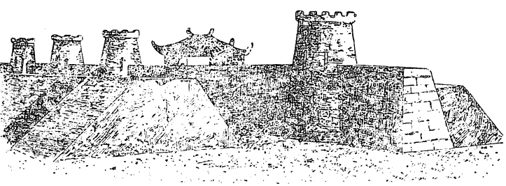

CỔ THÀNH ĐẠI-LA
Sử chép về nguồn gốc Hồ Quí Ly rất mù mờ.
Theo Khâm định Việt sử , « Hồ Quí Ly là cháu bốn đời của Hồ Liêm, dòng dõi ở Chiết Giang bên Trung Hoa. Tổ là Hồ Hưng Dật trôi dạt sang Việt Nam từ đời Ngũ Quí (907-909), làm quan, lập ấp ở làng Bèo Dột, nay thuộc huyện Quỳnh Lưu, Nghệ An. Đến đời Hồ Liêm thì dời ra ở Thanh Hóa. Quí Ly làm con nuôi Lê Huấn nên đổi ra họ Lê. Sau khi đoạt ngôi nhà Trần, Quý Ly lấy trở lại họ Hồ, đổi tên nước là Đại Ngu, tuyên bố rằng họ Hồ thuộc dòng dõi vua Nghiêu Thuấn ngày xưa ».
Trong quyển NHÀ CHÍNH TRỊ HỒ QUÍ LY, Chu Thiên đã tỏ ra ngờ vực về lý lịch họ Hồ chép trong Cương mục, và cho rằng sử thần đã xuyên tạc, có lẽ, về nguồn gốc của Quí Ly vì những kì thị hẹp hòi.
Theo VIỆT NAM SỬ LƯỢC Quí Ly có hai người cô lấy vua Minh Tông. Một người sinh ra vua Duệ Tông. Vợ vua Duệ Tông lại là em họ Hồ Quí Ly. Vì vậy mà Nghệ Tông rất tin dùng và gả em gái là Huy Ninh công chúa cho Quí Ly.
Như vậy Quí Ly có những liên hệ chằng chịt với các ông vua thời đó.
Như đã nói ở trên, Hồ Nguyên Trừng, con cả Hồ Quí Ly, sau khi bị bắt sang Tàu và làm quan to, đã làm sách NAM ÔNG MỘNG LỤC , trong đó, các nhà khảo sử thời nay tìm thấy những sử liệu quý báu về các nhân vật danh tiếng đồng thời hoặc trước ông, nhưng lại không có những chi tiết rõ ràng về lý lịch Quí Ly. Quí Ly thụ nghiệp với ai, học hành cách nào mà lại có những hiểu biết thật tế chói sáng như vậy.
Nhưng NAM ÔNG MỘNG LỤC cũng không thỏa mãn được những điều ta muốn biết. Ngay việc sử chép hai cô của Quí Ly lấy vua Minh Tông, và cũng chép hai bà ấy là con của quan Thái y Phạm Công Bân rất giỏi nghề thuốc và công minh chính trực. Sự liên hệ giữa Quí Ly và quan Thái y như thế nào mà Quí Ly gọi hai bà vợ vua ấy là cô. Nhất định sự liên hệ ấy phải rất gần, vì nhờ đó mà Quí Ly được Nghệ Tông hoàn toàn tin cậy và thăng chức rất mau.
CƯƠNG MỤC chép rằng tổ tiên Hồ Quí Ly là người Tàu lưu lạc đến Việt Nam sinh sống. Nhà văn Chu Thiên đã tỏ ý ngờ vực về điểm đó và cho rằng có thể các sứ thần xuyên tạc để hạ giá Hồ Quí Ly trước mắt người dân.
Nếu xét về điểm ấy thì chưa chắc có một dòng họ người Việt nào hoàn toàn « rặt giống »!
Sau khi quân đội Pháp tràn sang ta rồi rút đi, chúng ta có bao nhiêu đứa con lai đang sống với đời sống hoàn toàn Việt Nam?
Khi quân đội Mỹ rút lui, họ để lại cho Việt Nam bao nhiêu đứa con lai?
Khi đoàn quân kiêu hùng của Thành Cát Tư Hãn đại đế (Gengis Khan) rầm rộ kéo sang Âu Châu, chỉ trong vòng vài năm thôi, họ đã để lại đến ngày nay biết bao dấu vết về sự lai giống. Đến nỗi hiện thời người dân còn tin tưởng rằng vết chàm trên mình đứa bé, nhứt là ở khoảng giữa hai mông, là do dòng máu Mông Cổ còn truyền lại đến bây giờ, nên nó có tên là « Tache mogolique »!
Sau cả ngàn năm bị trị, bao lần quân đội Trung Hoa sang đánh phá, chiếm cứ, và ngay cả vào thời Hồ Quí Ly, nếu có sự lai giống cũng là việc dĩ nhiên.
Huống chi Hồ Quí Ly đã đem tâm cơ canh tân nước Việt, kỳ vọng rõ ràng nhất của ông là biến quốc gia Việt Nam hèn yếu dưới tay các ông vua bất tài nhu nhược thời Trần Mạt thành một nước thạnh vượng, hùng mạnh, ông đã làm việc đó một cách thành khẩn, nếu ta cứ hẹp hòi nghi ngờ thiện chí vì dân vì nước của ông thì cũng phải nói rằng ông làm cho cá nhân ông, cho dòng họ ông, chứ không hề là tay sai của TRUNG QUỐC. Mà dầu ông vì tư lợi đi nữa ta cũng phải công nhận rằng nếu ông thành công thì nhân dân Việt Nam cũng hưởng được kết quả vẻ vang. Như vậy, dòng máu Trung hoa nếu có chảy ít giọt trong huyết quản của ông, tưởng cũng chẳng hại gì cho tổ quốc và nhân dân cả!
Mang một hoài bão vĩ đại là thực hiện chương trình cải cách quốc gia mới mẻ nhất lịch sử để đem lại sự thịnh vượng, hùng mạnh cho dân tộc, Hồ Quí Ly đã tích cực hoạt động và tiến vùn vụt trên bước hoạn lộ.
Tháng năm năm Tân Hợi (I37I), dưới đời Nghệ Tông, Quí Ly vào quan trường với chức Chỉ hậu chánh trưởng. Ít lâu sau, ông được phong chức Khu mật đại sứ và được vua gả em gái là Huy Ninh công chúa, góa phụ của nhà quí tộc Trần Nhân Vinh.
Tháng chín năm ấy, Quí Ly được cử đi kinh lý Nghệ An xem xét dân tình, lại được gia tước TRUNG TUYÊN QUỐC THƯỢNG HẦU.
Tháng giêng năm Ất Mão (I357), Duệ Tông cử Quí Ly làm tham mưu quân sự, toàn quyền định đoạt việc quân, xếp đặt các thứ vị trong quân đội và chỉ huy toàn thể sĩ tốt.
Tháng chạp năm Bính Thìn (I376), theo Duệ Tông đánh Chiêm Thành, giữ nhiệm vụ đôn đốc lộ Nghệ An, phủ Tân Bình, các châu Thuận, Hóa, vận lương đến cửa biển Di luân (thuộc huyện Bình chính, Quảng bình).
Tháng giêng năm Kỷ Mùi (I379), dưới triều Phế Đế, được thăng chức Tư không, và vẫn giữ chức khu mật đại sứ.
Tháng hai năm Canh Thân (I380), quân Chiêm Thành cướp phá Thanh Hóa, Nghệ An, Quí Ly lãnh thủy quân, Đỗ Tử Bình lãnh lục quân đi dẹp. Quí Ly đại thắng quân Chiêm ở Ngư giang (phân lưu sông Mã, nay thuộc phủ Hoằng hóa, tỉnh Thanh Hóa), đuổi được quân Chiêm. Đỗ cáo bịnh trả binh quyền. Quí Ly thống xuất luôn cả lục quân với chức Đô thống chế đạo Hải tây.
Tháng ba năm Đinh Mão (I387), Quí Ly thăng chức Đồng bình Chương sự (tể tướng), được Nghệ Thông ban cờ kiếm có chữ đề: « văn võ toàn tài, quân thần đồng đức ».
Tháng hai năm Giáp Tuất (I394), dưới đời Thuận Tông, Nghệ Tông cho vẽ tranh tứ phụ 25 để vuốt ve Quí Ly.
Tháng hai năm Ất Hợi (I395), đời Thuận Tông, Quí Ly thăng chức cao nhứt trong triều là Phụ chính thái sư Bình chương quân quốc trọng sự, tước Tuyên trung vệ quốc Đại vương, tự xưng phụ chính cai giáo hoàng đế.
Tháng ba năm Mậu Dần (I398), Quí Ly tự xưng Khâm đức hưng liệt đại vương quốc tổ nhiếp chính.
Sau 27 năm làm quan cho nhà Trần, từ một viên quan hầu tầm thường trong cung điện, nhờ sự nâng đỡ của Nghệ Tông, Quí Ly vọt rất mau đến địa vị tột đỉnh trong triều, nắm hết quyền hành trong nước.
Ta có thể bảo Quí Ly nhiều thủ đoạn và tàn nhẫn khi cần, chớ không thể xem ông là kẻ nịnh thần được.
Để nắm được những quyền hành rộng rãi, để bảo vệ sanh mạng mình, để san bằng những chướng ngại do phe đối lập lạc hậu và thủ cựu đưa ra, những khi cần thiết, Quí Ly đã không từ bỏ những thủ đoạn tàn bạo, độc tài đối với những địch thủ nguy hiểm hay các phe đối lập nhiều quyền thế.
Người ta bảo Quí Ly là kẻ kiêu hãnh, chuyên quyền. Điều đó đúng như vậy.
Với một bộ óc siêu việt, những hiểu biết, những sáng kiến vượt không gian và thời gian, đi trước người đồng thời hàng vài trăm năm, lẽ tự nhiên, ông khó mà ngoan ngoãn đối với những ông vua bất tài, giá áo túi cơm lại chơi bời phóng túng một cách phàm phu tục tử ; và tỏ ra độc tài đối với những ông quan gàn dở lại tự mãn vô lối với cái học mọt sách, không đủ trình độ trí thức hiểu nổi tầm mức quan trọng của chương trình cách mạng rất khoa học của ông.
Trong hoàn cảnh của ông, kiên hãnh và chuyên quyền là tự nhiên, và có lẽ mỗi người trong chúng ta cũng làm khi gặp những trường hợp như vậy!
Không thể bảo Hồ Quí Ly nịnh thần vì cứ nhìn vào những hoạt động của ông suốt 27 năm ở chính quyền, nhìn vào những trở lực mà ông phải đối phó, phải vượt qua một mình vì không có một bộ óc tương đương với ông để chia sớt, ta phải nói là ông không có thì giờ để nịnh, và ông quá tự tin vào tài lực mình để cần đến việc xu nịnh! Các ông quan nịnh ông hầu củng cố địa vị hay thăng chức, nhiều tôn thất nịnh ông để bảo vệ gia đình như Trần Nguyên Đán chẳng hạn, và cả Thượng Hoàng Nghệ Tông cũng phải nịnh ông để mong ông đừng soán ngôi nhà Trần, còn bảo ông nịnh kẻ khác thì thiếu chứng cứ lịch sử.
Trong cuộc đời chánh trị, ông gặp vô số kẻ thù, và rất nhiều trở lực, nhưng chỉ có một lần quan trọng nhứt làm ông suýt mất mạng, phải hạ mình cầu cứu với Nghệ Tông. Đó là lần bị vua Phế Đế mưu giết.
Sau khi áp dụng được một phần chương trình cách mạng mà kết quả tốt đẹp đã bắt đầu xuất hiện, Hồ Quí Ly trở thành một nhân vật sáng giá nhất trong triều được Nghệ Tông tin tưởng và trọng vọng, nhứt là sau khi thắng thế đối với đạo quân hùng hậu của danh tướng Chàm Chế Bồng Nga ở hai trận Ngu Giang và Thần Đầu. Quí Ly được thăng chức Tể tướng và được vua Nghệ Tông ban cho ông cờ kiếm « văn võ toàn tài, quân thần đồng đức », nhiều người – trong đó có Đế Hiển, tức đương kim hoàng đế và các cận thần của ông – đã ganh tị và bất bình, vì đó là một vinh dự quá lớn đối với họ.
Nhận thấy tương lai Quí Ly còn rực rỡ hơn nữa, Đế Hiển và các cận thần bàn mưu đảo chánh Quí Ly.
Chúng tôi xin mượn nguyên văn đoạn này trong VIỆT SỬ TÂN BIÊN:
« Tháng 8 năm Mậu Thìn (I388), nhân có sao chổi hiện ở phương Tây, Đế Nghiễn (tức Đế Hiển) đã lâu khó chịu về việc thượng hoàng tin dùng Quí Ly, bàn với quan Thái úy Thúc Ngạc (con Nghệ Tông, anh họ của Đế Nghiễn) và bọn Ngự sử đại phu Lê Á Phụ, tướng quân Nguyễn Khoái, Nguyễn Văn Nghê, Nguyễn Khả, Nguyễn Bát Sách, Lê Lạc, học sinh Lưu Thường mưu trừ Quí Ly. Vương Nhữ Mai chầu học trong cung để lộ tin này ra ngoài. Quí Ly hoảng sợ bàn với thủ túc là Nguyễn Đa Phương và Phạm Cự Luận. Đa Phương khuyên Quí Ly chạy ra ngoài núi Đại Lại (huyện Vĩnh Lộc, tỉnh Thanh Hóa) để lánh mình đã.
« Cự Luận nói: « Một khi đã ra ngoài thì khó bề sống sót! »
« Quí Ly càng luống cuống, nói: « Hay là ta tự tận còn hơn để lọt vào tay người! »
« Cự Luận tiếp: « Năm trước nhà vua đã giết Quang phục Đại Vương Húc (con thượng hoàng Nghệ Tông), thượng hoàng hãy còn căm, nay vua lại nghe kế tiểu nhân sát hại công thần. Đại nhân nên vào ngay, tâu bày lợi hại rằng: « xưa nay chưa ai bán con nuôi cháu, chỉ có chuyện bán cháu nuôi con. Đó là lời ca dao từ xưa đến nay. Xong việc thì xin lập Chiêu Định là tiện hơn cả (Chiêu Định tên là Ngang, con Nghệ Tông) ». Quí Ly nghe theo, vào mật tâu thượng hoàng và được như ý. Mấy hôm sau, Nghệ Tông nói thác là sắp tuần du ngoài An sinh (Hải dương), sai vời Đế Nghiễn vào, Đế Nghiễn tới, Nghệ Tông truyền đem giam vào chùa Tư Phúc.
« Sau thượng hoàng xuống chiếu như sau: « Trước kia Duệ Tông đi đánh Chiêm không trở về, dùng con nối ngôi cha là theo đạo xưa nay. Nhưng quan gia từ khi lên ngôi chưa hết tính trẻ con, giữ đức thông thường, thân với lũ tiểu nhân Lê á Phụ, Lê dữ Nghị mưu hãm công thần làm lung lay xã tắc nên giáng xuống làm Minh Đức Đại Vương. Mà nước nhà không thể không vua, vậy rước Chiêu Định vương Ngang nối mối lớn. Bá cáo trong ngoài đều cho nghe biết. »
« Lúc giải Đế Nghiễn đi, bọn Nguyễn Khoái, Lê Lạc và đồng bọn muốn đem quân vào cướp vua, nhưng Đế Nghiễn viết hai chữ « giải giáp » và khuyên mọi người đừng trái mệnh Thượng hoàng. Một lúc sau, Đế Nghiễn bị đem xuống phủ Thái Đường thắt cổ chết. Bọn Nguyễn Khoái bị đày ra ngoài biên ải.
« Ngoài ra, những kẻ dự cuộc âm mưu, nhất là các tông thất như Trần nguyên Diệu (em ruột Đế Nghiễn), Trần nguyên Đĩnh (con anh ruột của Nghệ Tông là Cung tĩnh vương Nguyên Trác) và Thiếu bảo Trần Tông 26 (Nguyên Viện trưởng Lạn Kha thư viện ở cung Bảo Hà trên núi Lạn Kha, làng Phật-Tích, Bắc Ninh), đều bỏ chạy qua Chiêm Thành rồi đem quân về đánh lại. Tại Hoàng Giang, bọn này bị Trần Khát Chân đánh bại. Nguyên Diệu bị giết, Nguyên Đĩnh, Trần Tông bị Quí Ly hạ lệnh bắt, liền đâm đầu xuống bể, còn dư đảng là Trần thiêm-Bình chạy qua Lào (Luang-Prabang), sau này dẫn đường cho quân Minh sang chinh phục nước ta.
« Còn một nhân vật trong phe phản động khó diệt trừ hơn cả là Thúc Ngạc, bởi Thúc Ngạc là con Nghệ Tông. Quí Ly phải áp dụng một phương pháp khéo léo hơn. Trước khi Đế Nghiễn bị bỏ, Quí Ly vờ nói xin đề nghị Thúc Ngạc lên thay. Thúc Ngạc không nhận, nhân đó Quí Ly tâu với Nghệ Tông: « Quan Thái-úy (tức Thúc Ngạc) từ ngôi vua là người có đức lớn, xin gia phong cho xứng ».
« Nghệ Tông liền phong Thúc Ngạc làm Trang định vương. Ngạc nghe chuyện, biết quỉ kế của Quí Ly, lấy làm sợ hãi, quỉ kế đó là nâng cao kẻ địch để tỏ sự công bằng vì quyền lợi quốc gia rồi sau này hạch tội sẽ không có vẻ gì tư thù. Quả vậy, sau này Ngạc bị Quí Ly dèm pha luôn, liền bỏ trốn ra Vạn Ninh (Hải-ninh, thuộc Mong Cáy.) Quí Ly xin Thượng hoàng cho Ninh-Vệ tướng quân Nguyễn nhân Liệt đuổi theo triệu về, Quí Ly ngầm sai Nhân Liệt đánh chết Ngạc rồi đem về man tấu Ngạc kháng mệnh và đánh sứ giả nên bị chúng giết chết. Thượng hoàng giận lắm, truy giáng Ngạc xuống làm Man Vương.
« Nhìn qua con đường làm quan của Quí Ly, chúng ta thấy rằng trong 27 năm tham gia chánh quyền, Quí Ly đã phải đem tài sức và trí thông minh hoạt động một cách mềm dẻo, khôn khéo hoặc cương quyết, tàn bạo với những thủ đoạn thay đổi tùy từng người, từng phe phái, từng đẳng cấp, từng hoàn cảnh để đối phó với những trở lực vĩ đại, hùng mạnh. Chỉ cần một lúc, có khi chỉ một phút yếu thế thôi là cả cá nhân ông, gia tộc ông và hoài bão ông tiêu tan thành tro bụi.
« Những trở lực vĩ đại đó xuất phát hoặc từ một kẻ có chánh nghĩa, có nhân tâm và quyền thế hơn ông là ông vua, nhân vật trên danh nghĩa đứng hàng thứ hai trong nước, hoặc từ đẳng cấp quí tộc đã sanh sôi nẩy nở rất đông và khá mạnh, hoặc từ những bậc công thần, những ông quan có nhiều thế lực và sau lưng những người này còn có cả một đẳng cấp mà ảnh hưởng đối với dân chúng vô cùng to rộng, hoặc từ khối quần chúng mênh mông, vô danh, quá nhiều thành kiến trong đầu. Tóm lại, ta có thể nói Hồ Quí Ly đã đơn thân độc mã chống với cả nước từ vua cho đến dân.
« Có thể bảo rằng ông chỉ là một chiếc thuyền chở một nền văn minh sáng rực chơ vơ trên một đại dương đầy những lượn sóng thần cực kỳ dữ dội. Chiếc thuyền ấy chỉ lách mình chạy tới trên những lượn sóng hùng mạnh kia được là nhờ một luồng gió có thế lực huyền bí nhờ vào tư cách « Thượng Hoàng » của mình để chế ngự sóng dữ. Luồng gió ấy là Nghệ Tông.
« Quí Ly cũng biết như vậy nên luôn luôn nương tựa, bám víu vào Nghệ Tông, trung thành với Thượng hoàng để thực hiện cho kỳ được lý tưởng của mình.
« Do đó mà khi vừa có quyền hành trong tay nhờ sự tin cậy của Nghệ Tông, Quí Ly đã nghĩ ngay đến việc nắm bộ máy hành chánh trong nước, vì nó là nền tảng giúp ông thực hiện chương trình canh tân xứ sở ».